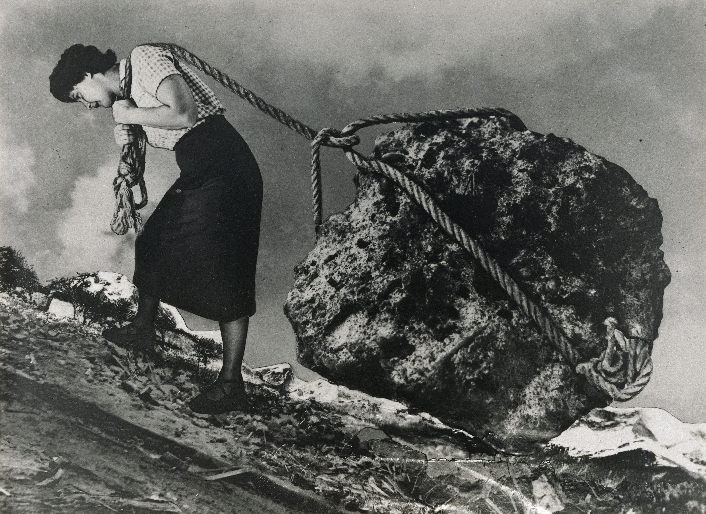

TODAS TUS RESPUESTAS
SON CORRECTAS
Observa el fotocollage de la artista alemana y argentina Grete Stern.
¿Por qué piensas que la mujer tira de una piedra?
¿A dónde irá?
¿Te parece que la piedra pesa mucho o poco?
¿Por qué?


Grete Stern, Sueño nº 15: Sin título, de la serie Los Sueños, 1949